V8 简介
前言
JavaScript 绝对是最火的编程语言之一，一直具有很大的用户群，随着在服务端的使用（NodeJs），更是爆发了极强的生命力。编程语言一边编译一边执行，很明显解释型语言的执行速度是慢于编译型语言的，而 JavaScript 就是一种解释型脚本语言，支持动态类型、弱类型、基于原型的语言，内置支持类型。鉴于 JavaScript 都是在前端执行，而且需要及时响应用户，这就要求 JavaScript 可以快速的解析及执行。
随着 Web 想着技术的发展，JavaScript 所要承担的工作也越来越多，早就超越了“表单验证”的范畴，这就是更需要快速的解析和执行 JavaScript 脚本。V8 引擎就是为了解决这一总是而生，在 node 也是采用该引擎来解析 JavaScript。
V8 是如何使得 JavaScript 性能有大幅提升的呢？通过对一些书籍和文章的学习，梳理了 V8 的想着的内容，本文将带你认识 V8.
内容
一、渲染引擎及见面渲染
浏览器自从上世纪 80 年代后期 90 年代初期诞生以来，已经得到了长足的发展，其功能也起来越丰富，包括网络、资源管理、网页浏览、多页面管理、插件和扩展、书签管理、历史记录管理、设置管理、下裁管理、账户和同步、安全机制、隐私管理、外观主题、开发者工具等。在这些功能中，为用户提供网页浏览服务无疑是最重要的功能，下面将对相关内容进行介绍。
1.1 渲染引擎
渲染引擎： 能够将 HTML/CSS/JavaScript 文本及相应的资源文件转换成图像结果。沉浸引擎的主要作用是将资源文件转化为用户可见的结果。在浏览器的发展过程中，不同的厂商开发了不同的渲染引擎，如 Tridend(IE)、Gecho(FF)、WebKit(Safari,Chrome,Andriod 浏览器)等。WebKit 是由苹果 2005 年发起的一个开源项目，引起了众多公司的重视，几年间被很多公司所采用，在移动端更占据了垄断地位。更有甚者，开发出了基于 WebKit 的支持 HTML5 的 web 操作系统（如：Chrome OS、Web OS）。
下面是 WebKit 的大致结构：
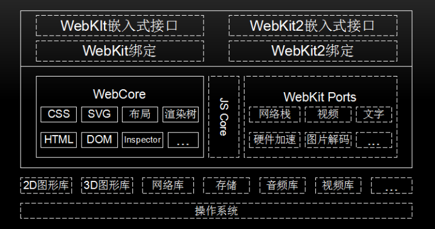
上图中实线框内模块是所胡移植的共有部分，虚线框内不同的厂商可以自己实现。下面进行介绍：
- 操作系统：是管理和控制计算机硬件与软件资源的计算机程序，是直接运行在“裸机”上的最基本的系统软件，任何其他软件都必须在操作系统的支持下才能运行。WebKit 也是在操作系统上工作的。
- 第三方库，为了 WebKit 提供支持，如图形库、网络库、视频库等。
- WebCore 是各个浏览器使用的共享部分，包括 HTML 解析器、CSS 解析器、DOM 和 SVG 等。JavaScriptCore 是 WebKit 的默认引擎，在谷歌系列产品中被替换为 V8 引擎。WebKit Ports 是 WebKit 中的非共享部分，由于平台差异、第三方库和需求的不同等原因，不同的移植导致了 WebKit 不同版本行为不一致，它是不同流星器性能和功能差异的关键部分。
- WebKit 嵌入式编程接口，供浏览器调用，与移植密切相关，不同的移植有不同的接口规范。
- 测试用例，包括布局测试用例和性能测试用例，用来难渲染结果的正确性。
1.2 网页渲染流程
上面介绍了沉浸引擎的各个模块，那么一张网页，要经历怎样的过程，才能抵达用户面前？
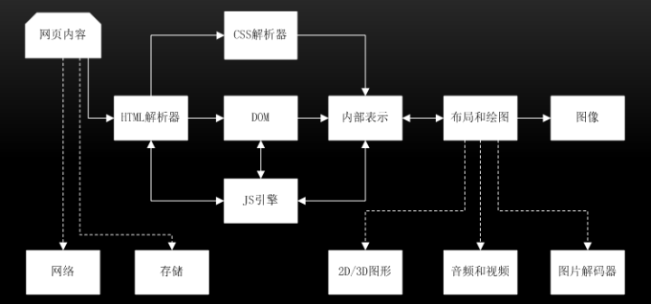
首先是网页内容，输入到 HTML 解析器，HTML 解析器解析，然后构建 DOM 树，在这期间如果遇到 JavaScript 代码则交给 JavaScript 引擎处理；如果来自 CSS 解析器的样式信息，构建一个内部绘图模型。该模型由布局模块计算模型内部各个元素的位置和大小信息，最后由绘图模块完成从该模型到图像的绘制。在网页渲染的过程中，大致可分为下面 3 个阶段。
- 从输入 URL 到生成 DOM 树
- 从 DOM 树到构建 WebKit 绘图上下文
- 绘图上下文到最终图像呈现
1.2.1 从输入 URL 到生成 DOM 树
- 地址栏输入 URL，WebKit 调用资源加载器加载相应资源；
- 加载器依赖网络模块建立连接，发送请求并接收答复；
- WebKit 接收各种网页或者资源数据，其中某些资源可能同步或异步获取；
- 网页交给 HTML 解析器转变为词语；
- 解释器根据词语构建节点，形成 DOM 树；
- 如果节点是 JavaScript 代码，调用 JavaScript 引擎解释并执行；
- JavaScript 代码可能会修改 DOM 树结构；
- 如果节点依赖其他资源，如图片、CSS、视频等，调用资源加载器加载它们，但这些是异步加载的，不会阻碍当前 DOM 树继续创建；如果是 JavaScript 资源 URL（没有标记异步方式），则需要停止当前 DOM 树创建，直到 JavaScript 加载并被 JavaScript 引擎执行后才继续 DOM 树的创建。
1.2.2 从 DOM 树到构建 WebKit 绘图上下文
- CSS 文件被 CSS 解释器解释成内部表示；
- CSS 解释器完成工作后，在 DOM 树上附加样式信息，生成 RenderObject 树；
- RenderObject 节点在创建的同时，WebKit 会根据网页层次结构构建 RenderLoayer 树，同时构建一个虚拟绘图上下文。
1.2.3 绘图上下文到最终图像呈现
- 绘图上下文是一个与平台无关的抽象类，它将每个绘图操作桥接到不同的具体实现类，也就是绘图实现类；
- 绘图实现类也可能有简单的实现，也可能有复杂的实现，软件渲染、硬件渲染、合成渲染等；
- 绘图实现将 2D 图形库或者 3D 图形绘制结果保存，交给浏览器界面进行展示。
上述是一个完整的渲染的过程，现代网页很多都是动态的，随着网页与用户的交互，浏览器需要不断的重复渲染过程。
1.3 JavaScript 引擎
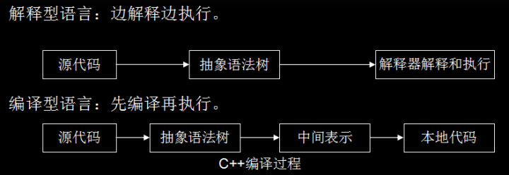
JavaScript 本质上是一种解释型语言，与编译语言不同的是它需要一遍执行一边解析，而编译型语言在执行时已经完成编译，可直接执行，有更快的执行速度（如上图所示）。JavaScript 代码是在浏览器解析和执行的，如果需要时间太长，会影响用户体验。那么提高 JavaScript 的解析速度就是当务之急。JavaScript 引擎和渲染引擎的关系如下图所示：
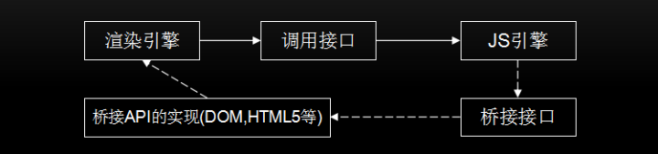
JavaScript 语言是解释型语言，为了提高性能，引入了 Java 虚拟机和 C++编译中的众多技术。现在 JavaScript 引擎的执行过程大致是：
源代码-→ 抽象语法树-→ 字节码-→JIT-→ 本地代码(V8 引擎没有中间字节码)。一段代码的抽象语法树示例如下：
function demo(name) {
console.log(name);
}
2
3
抽象语法树如下：
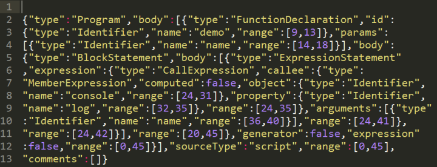
V8 更加直接的将抽象语法树通过 JIT 技术转换成本地代码，放弃了在字节码阶段可以进行的一些性能优化，但保证了执行速度。在 V8 生成本地代码后，也会通过 Profiler 采集一些信息，来优化本地代码。虽然，少了生成字节码这一阶段的性能优化，但极大减少了转换时间。
但是在 2017 年 4 月底，v8 的 5.9 版本发布了，新增了一个 lgnition 字节码解释器，将默认启动，从此之后将与 JSCore 有大致相同的流程。做出这一改变的原因为：（主要动机）减轻机器码占用的内存空间，即牺牲时间换空间；提高代码的启动速度；对 v8 的代码进行重构，降低 v8 的代码复杂度(V8 Ignition：JS 引擎与字节码的不解之缘 - CNode 技术社区)。
JavaScript 的性能和 C 相比还有不小的距离，可预见的未来估计也只能接近它，而不是与它相比，这从语言类型上已经决定。下面将对 V8 引擎进行更为细致的介绍。
二、V8 引擎
V8 引擎是一个 JavaScript 引擎实现，最初由一些语言方面专家设计，后被谷歌收购，随后谷歌对其进行了开源。V8 使用 C++开发，在运行 JavaScript 之前，相比其它的 JavaScript 的引擎转换成字节码或解释执行，V8 将其编译成原生机器码（IA-32, x86-64, ARM, or MIPS CPUs），并且使用了如内联缓存（inline caching）等方法来提高性能。有了这些功能，JavaScript 程序在 V8 引擎下的运行速度媲美二进制程序。V8 支持众多操作系统，如 Windows、linux、android 等，也支持其他硬件架构，如 IA32,X64,ARM 等，具有很好的可移植和跨平台特性。V8 顶上代码结构如下：
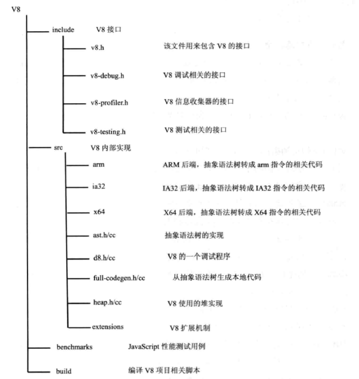
2.1 数据表示
JavaScript 是一种动态类型语言，在编译时并不能准确知道变量的类型，只可以在运行时确定，这就不像 C++或者 Java 等静态类型语言，在编译时候就可以确切知道变量的类型。然而，在运行时计算和决定类型，会严重影响语言性能，这也就是 JavaScript 运行效率比 C++或者 JAVA 低很多的原因之一。
在 C++中，源代码需要经过编译才能执行。在生成本地代码的过程中，变量的地址和类型已经确定，运行本地代码时利用数组和位移就可以存取变量和方法的地址，不需要再进行额外的查找，几个机器指令即可完成，节省了确定类型和地址的时间。由于 JavaScript 是无类型语言，那就不能像 C++那样在执行时已经知道变量的类型和地址，需要临时确定，JavaScript 和 C++有以下几个区别：
- 编译确定位置，C++编译阶段确定位置偏移信息，在执行时直接存取，JavaScript 在执行阶段确定，而且执行期间可以修改对象属性；
- 偏移信息共享，C++有类型定义，执行时不能动态改变，可共享偏移信息，JavaScript 每个对象都是自描述，属性和位置偏移信息都饮食在自身的结构中；
- 偏移信息查找，C++查找偏移地址很简单，在编译代码阶段，对使用的某类型成员变量设置偏移位置，JavaScript 中使用一个对象，需要通过属性名匹配才能找到相应的值，需要更多 的操作。
在代码执行过程中，变量的存取是非常普遍和频繁的，通过偏移量来存取，使用少数两汇编指令就能完成，如果通过属性名匹配则需要更多 的汇编指令，也需要更多的内存空间。示例如下：
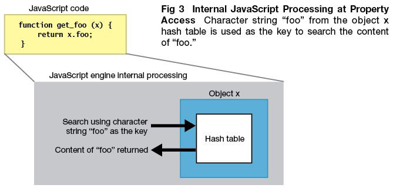
在 JavaScript 中，除 boolean、number、string、null、undefined 这个五个简单变量外，其他的数据都是对象，V8 使用一种特殊的方式来表示它们，进而优化 JavaScript 的内部表示问题。
在 V8 中，数据的内部表示由数据的实际内容和数据的句柄构成。数据的实际内容是变长的，类型也是不同的；句柄固定大小，包含指向数据的指针。这种设计可以方便 V8 进行垃圾回收和移动数据内容，如果直接使用指针的话就会出问题或者需要更大的开销，使句柄的话，只需修改句柄中的指针即可，使用者使用的还是句柄，指针改动是对使用者透明的。
除少数数据（如整型数据）由 handle 本身存储外，其他内容限于句柄大小和变长等原因，都存储在堆中。整数直接从 value 中取值，然后使用一个指针向它，可以减少内存的占用并提高访问速度。一个句柄对象的大小是 4 字节（32 位设备）或者 8 字节（64 位设备），而在 JavaScriptCore 中，使用的 8 个字节表示句柄。在堆中存放的对象都是 4 字节对齐的，所以它们指针的后两位是不需要的，V8 用这两位表示数据的类型，00 为整数，01 为其他。
JavaScript 对象在 V8 中的实现包含三个部分：隐藏类指针，这是 v8 为 JavaScript 对象创建的隐藏类；属性值表指针，指向该对象包含的属性值；元素表指针，指向该对象包含的属性。
2.2 工作过程
前面有过介绍，V8 引擎在执行 JavaScript 的过程中，主要有两个阶段：编译和运行，与 C++的执行前完全编译不同的是，JavaScript 需要在用户使用时完成编译和执行。在 V8 中，JavaScript 相关代码并非一下完成编译的，而是在某些代码需要执行时，才会进行编译，这就提高了响应时间，减少了时间开销。在 V8 引擎中，源代码先被解析器转变为抽象语法树（AST），然后使用 JIT 编译器的全代码生成器从 AST 到字节码的转换时间，提高了代码执行速度。但由于缺少了转换为字节码这一中间过程，也就减少了优化代码的机会。
V8 引擎编译本地代码时使用的主要类如下所示：
- Script：表示 JavaScript 代码，即包含源代码，又包含编译之后生成的本地代码，即是编译入口，又是运行入口；
- Compiler：编译器类，辅助 Script 类来编译生成代码，调用解释器(Parser)来生成 AST 和全代码生成器，将 AST 转变为本地代码；
- AstNode：抽象语法树节点类，是其他所有节点的基类，包含非常多的子类，后面会针对不同的子类生成不同的本地代码；
- AstVisitor：抽象语法树的访问者类，主要用来遍历异构的抽象语法树；
- FullCodeGenerator：AstVisitor 类的子类，通过遍历 AST 来为 JavaScript 生成本地可执行代码。
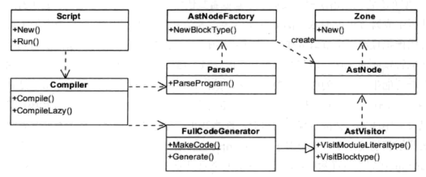
JavaScript 代码编译的过程大致为：Script 类调用 Compiler 类的 Compile 函数为其生成本地代码。Compile 函数先使用 Parser 类生成 AST，再使用 FullCodeGenerator 类来生成本地代码。本地代码与具体的硬件平台密切相关，FullCodeGenerator 使用多个后端生成与平台相匹配的本地汇编代码。由于 FullCodeGenerator 通过遍历 AST 来为每个节点生成相应的汇编代码，缺失了全局视图，节点之间的优化也就无从谈起。
在执行编译之前，V8 会构建众多全局对象并加载一些内置的库（如 math 库），来构建一个运行环境。而且在 JavaScript 源代码中，并非所有的函数都被编译生成本地代码，而是延迟编译，在调用时才会编译。
由于 V8 缺少了生成中间代码这一环节，缺少了必要的优化，为了提升性能，V8 会在生成本地代码后，使用数据分析器(profiler)采集一些信息，然后根据这些数据将本地代码进行优化，生成更高效的本地代码，这是一个逐步改进的过程。同时，当发现优化后代码的性能还不如未优化的代码，V8 将退回原来的代码，也就是优化回滚。下面介绍一下运行阶段，该阶段使用的主要类如下所示：
- Script：表示 JavaScript 代码，即包含源代码，又包含编译之后生成的本地代码，即是编译入口，又是运行入口；
- Execution：运行代码的辅助类，包含一些重要函数，如 Call 函数，它辅助进入和执行 Script 代码；
- JSFunction：需要执行的 JavaScript 函数表示类；
- Runtime：运行这些本地代码的辅助类，主要提供运行时所需的辅助函数，如：属性访问、类型转换、编译、算术、位操作、比较、正则表达式等；
- Heap：运行本地代码需要使用的内在内存堆类；
- MarkCompactCollector：垃圾回收机制的主要实现类，用来标记、清除和整理等基本的垃圾回收过程；
- SweeperThread：负责垃圾回收的线程。
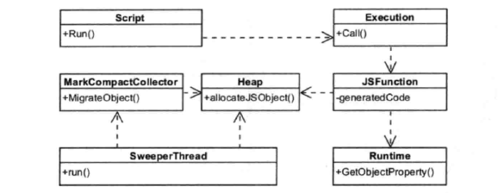
先根据需要编译和生成这些本地代码，也就是使用编译阶段那些和操作。在 V8 中，函数是一个基本单位，当某个 JavaScript 函数被调用时，V8 会查找该函数是否已经生成本地代码，如果已经生成则直接调用该函数。否则，V8 引擎会生成属于该函数的本地代码。这就是节约了时间，减少了处理那些使用不到的代码的时间。其次，执行编译后的代码为 JavaScript 构建 JS 对象，这需要 Runtime 类来辅助创建对象，并需要从 Heap 类分配内存。再次，借助 Runtime 类中的辅助函数来完成一些功能，如属性访问等。最后将不用的空间进行标记清除和垃圾回收。
2.3 优化回溯
因为 V8 是基于 AST 直接生成本地代码，没有经过中间表示层的代码，所以本地代码尚未经过很好的优化。于是，在 2010 年，V8 引入了新的编译器-Crankshaft，它主要针对热点函数进行优化，基于 JavaScript 源代码开始分析而非本地代码，同时构建 Hydroger 图并基于此来进行优化分析。
Crankshaft 编译器为了性能考虑，通常会做出比较乐观和大胆的预测一代码稳定且变量类型不变，所以可以生成高效的本地代码。但是，鉴于 JavaScript 的一个弱类型的语言，变量类型也可能在执行的过程中进行改变，鉴于这种情况，V8 会将该编译器做的想当然的代码进行回滚，称为优化回滚。
示例如下：
var counter = 0;
function test(x,y){
counter++;
if(counter<10000){
// do something
return 'jeri';
}
var unknown = new Date();
console.log(unknown);
}
2
3
4
5
6
7
8
9
10
该函数被调用多次之后，V8 引擎可能会触发 Crankshaft 编译器对其进行优化，而优化代码认为救命代码的类型信息都已经被确定。但，由于尚未真正执行到 new Date()这个地方，并未获取 unknown 这个变量是类型，V8 只得将该部分代码进行回溯。代码圆润是一个很耗时的操作，在写代码过程中，尽量不要触发代码该操作。
在最近发布的 V8 5.9 版本中，新增了一个 Ignition 字节码解释器，TurboFan 和 Ignition 结合起来共同完成 JavaScript 的编译。这个版本中消除 Cranshaft 这个旧的编译器，并让新的 Turbofan 直接从字节码来优化代码，并当需要进行反优化的时候直接反优化到字节码，而不需要再考虑 JS 源代码。
2.4 隐藏类与内嵌缓存
隐藏类
在执行 C++代码时，仅凭几个指令即可根据偏移信息获取变量信息，而 JavaScript 里需要通过字符串匹配来查找属性值的，这就需要更多的操作才能访问到变量信息，而代码量变量存取是十分频繁的，这也是制约了 JavaScript 的性能。V8 借用了类和偏移位置的思想，将本来通过属性匹配来访问属性值的方法进行了改进，使用类似 C++编译器的偏移位置机制来实现，这就是隐藏类。
隐藏类将对象划分成不同的组，对于组内对象拥有相同的属性名和属性的情况，将这些组的属性名和对应的偏移位置保存在一个隐藏类中，组内所有对象共享该信息。同时，也可以识别属性不同的对象。示例如下：
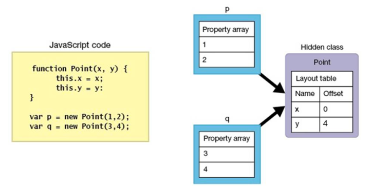
使用 Point 构造了两个对象 p 和 q，这两个对象具有相同的属性名，V8 将它们归为同一个组，也就是隐藏类，这些属性在隐藏类中有相同的偏移值，p 和 q 共享这一信息，进行属性访问时，只需根据隐藏类的偏移值即可，由于 JavaScript 是动态类型语言，在执行时可以更改变量的类型，如果上述代码执行之后，执行 q.z=2，那么 p 和 q 将不再被认为是一个组，q 将是一个新的隐藏类。
内嵌缓存
正常访问对象属性的过程是：首先获取隐藏类的地址，然后根据属性名查找偏移值，然后计算该属性的地址。虽然相比以往在整个执行环境中查找减小了很大的工作量，但依然比较耗时。能不能将之前查询的结果缓存起来，供再次访问呢？当然是可行的，这就是内嵌缓存。
内嵌缓存的大致思路就是将初次查找的隐藏类和偏移值保存起来，当下次查找的时候，先比较当前对象是否是之前的隐藏类，如果是的话，直接使用之前的缓存结果，减少再次查找表的时间。当然，如果一个对象有多个属性，那么缓存失误的概率就会提高，因为某个属性的类型变化之后，对象的隐藏类也会变化，就与之前的缓存不一致，需要重新使用以前的方式查找哈希表。
2.5 内存管理
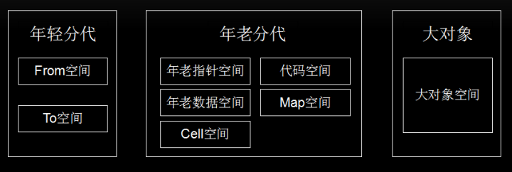
2.6 垃圾回收
V8 使用了分代和大数据的内存分配，在回收内存时使用精简整理的算法标记未引用的对象，然后消除没有标记的对象，最后整理和压缩那些还未保存的对象，即可以完成垃圾回收。
2.7 快照
三、V8 VS JavaScriptCore
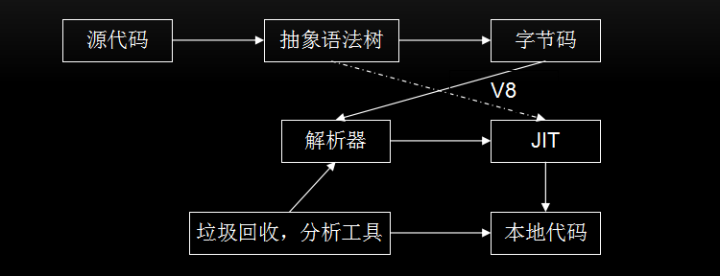
四、功能扩展
JavaScript 引擎的主要功能是解析和执行 JavaScript 代码，往往不能满足使用者多样化的需要，那么就可以增加扩展以提升它的能力。V8 引擎有两种扩展机制：绑定和扩展。
4.1 绑定机制
使用 IDL 文件或接口文件生成绑定文件，将这些文件同 V8 引擎一起编译。WebKit 中使用 IDL 来定义 JavaScript，但又与 IDL 有所不同，有一些改变。定义一个新的接口的步骤大致如下：
- 定义新的接口文件，可以在 JavaScript 代码进行调用，如 mymodule.MyObj.myAttr；
module mymodule {
interface [
InterfaceName = MyObject
] MyObj {
readonly attribute long myAttr;
DOMString myMethod (DOMString myArg);
};
}
2
3
4
5
6
7
8
- 按照引擎定义的标准接口为基础实现接口类，生成 JavaScript 引擎所需的绑定文件。WebKit 提供了工具帮助生成所需的绑定类，根据引擎不同和引擎开发语言的不同而有所差异。V8 引擎会为上述示例 v8MyObj.h (MyObj 类具体的实现代码)和 V8MyObj.cpp (桥接代码，辅组注册桥接的函数到 V8 引擎)两个绑定文件。
JavaScript 引擎绑定机制需要将扩展代码和 JavaScript 引擎一块编译和打包，不能根据需要在引擎启动后再动态注入这些本地代码。在实际 WEB 开发中，开发者都是基于现有浏览器的，根本不可能介入到 JavaScript 引擎的编译中，绑定机制有很大的局限性，但其非常高效，适用于对性能要求较高的场景。
4.2 Extension 机制
通过 V8 的基类 Extension 进行能力扩展，无需和 V8 引擎一起编译，可以动态为引擎增加功能特性，具有很大的灵活性。
Extension 机制的大致思路就是，V8 提供一个基类 Extension 和一个全局注册函数，要想扩展 JavaScript 能力，需要经过以下步骤：
class MYExtension : public v8::Extension {
public:
MYExtension() : v8::Extension("v8/My", "native function my();") {}
virtual v8::Handle<v8::FunctionTemplate> GetNativeFunction (
v8::Handle<v8::String> name) {
// 可以根据name来返回不同的函数
return v8::FunctionTemplate::New(MYExtention::MY);
}
static v8::Handle<v8::Value> MY(const v8::Arguments& args) {
// Do sth here
return v8::Undefined();
}
};
MYExtension extension;
RegisterExtension(&extension);
2
3
4
5
6
7
8
9
10
11
12
13
14
15
- 基于 Extension 基类构建一个它的子类，并实现它的虚函数—GetNativeFunction，根据参数 name 来决定返回实函数；
- 创建一个该子类的对象，并通过注册函数将该对象注册到 V8 引擎，当 JavaScript 调用’my’函数时就可被调用到。
Extension 机制是调用 V8 的接口注入新函数，动态扩展非常方便，但没有绑定机制高效，适用于对性能要求不高的场景。
五、总结
在过去几年，JavaScript 在很多领域得到了广泛的应用，然而限于 JavaScript 语言本身的不足，执行效率不高。Google 也推出了一些 JavaScript 网络应用，如 Gmail、Google Maps 及 Google Docs office 等。这些应用的性能不仅受到服务器、网络、渲染引擎以及其他诸多因素的影响，同时也受到 JavaScript 本身执行速度的影响。然而既有的 JavaScript 引擎无法满足新的需求，而性能不佳一直是网络应用开发者最关心的。Google 就开始了 V8 引擎的研究，将一系列新技术引入 JavaScript 引擎中，大大提高了 JavaScript 的执行效率。相信随着 V8 引擎的不断发展，JavaScript 也会有更广泛的应用场景，前端工程师也会有更好的未来！ 那么结合上面对于 V8 引擎的介绍，我们在编程中应注意：
- 类型： 对于函数，JavaScript 是一种动态类型语言，JavaScriptCore 和 V8 都使用隐藏类和内嵌缓存来提高性能，为了保证缓存命中率，一个函数应该使用较少的数据类型；对数组，应尽量存放相同类型的数据，这样就可以通过偏移位置来访问。
- 数据表示： 简单类型数据（如整型）直接保存在句柄中，可以减少寻址时间和内存占用，如果可以使用整数表示的，尽量不要用浮点类型。
- 内存： 虽然 JavaScript 语言会自己进行垃圾回收，但我们也应尽量做到及时回收不用的内存，对不再使用的对象设置为 null 或使用 delete 方法来删除（使用 delete 方法删除会触发隐藏类新建，需要更多的额外操作）。
- 优化回滚： 在执行多次之后，不要出现修改对象类型的语句，尽量不要触发优化回滚，否则会大幅度降低代码的性能。
- 新机制： 使用 JavaScript 引擎或者渲染引擎提供的新机制和新接口提高性能。
参考资料
- 认识 V8 引擎
- JavaScript 深入浅出第 4 课：V8 引擎是如何工作的？
- V8 引擎初步介绍
- JavaScript 是如何工作的：深入 V8 引擎&编写优化代码的 5 个技巧
- V8 引擎和 JavaScript 优化建议
- V8 是怎么跑起来的 —— V8 的 JavaScript 执行管道
联系作者
平凡世界，贵在坚持。